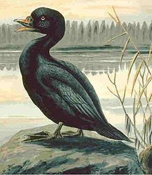
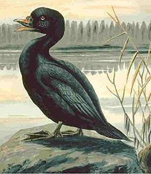

| Common Scoter | |
|---|---|
|  | |
| Conservation status | |
| Binomial name | |
| Melanitta nigra (Linnaeus, 1758) |
| Common Scoter | |
|---|---|
|  | |
| Conservation status | |
| Binomial name | |
| Melanitta nigra (Linnaeus, 1758) |
The Common Scoter (Melanitta nigra) is a large sea duck, 43-54 cm in length, which breeds over the far north of Europe and Asia east to the Olenyok River. The American/E Siberian M. americana (Black Scoter) is sometimes considered a subspecies of M. nigra.
It winters further south in temperate zones, on the coasts of Europe as far south as Morocco. It forms large flocks on suitable coastal waters. These are tightly packed, and the birds tend to take off and dive together.
The lined nest is built on the ground close to the sea, lakes or rivers, in woodland or tundra. 6-8 eggs are laid.
It is characterised by its bulky shape and large bill. The male is all black with a bulbous bill which shows some yellow coloration around the nostrils. The female is a brown bird with pale cheeks, very similar to female Black Scoter.
This species can be distinguished from other scoters, apart from Black, by the lack of white anywhere on the drake, and the more extensive pale areas on the female.
This species dives for crustaceans and molluscs; it also eats aquatic insects and small fish when on fresh water.
The Common Scoter is one of the species to which the Agreement on the Conservation of African-Eurasian Migratory Waterbirds (AEWA) applies.

{kind=link}